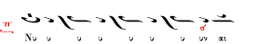

����������, ���������� � �� ���� ��� ����; / Chromatic, diatonic, attracted and
when?
The pitch of both low NH and high NH in pieces of Plagal Second mode is performed
in different ways between psaltai in certain musical phrases.
Low NH is performed sharper (melodically attracted to PA) by some psaltai when ascending
from NH to PA and this fact finds some support in classical books where a sharp
sign is written on NH in some theseis, but not consistently and not always. Here
is an example from the Three Teachers' transcriptions:

(image from D. Nerantzis' article [html])
In the same thesis above some psaltai do not perform the melodic attraction (especially
when the sharp sign is not there) and claim that low NH-PA in Plagal Second mode
is always a major tone (12 moria).
The Patriarchal Committee of 1881-83 does not mention anything about a melodic attraction
of NH towards PA. This is perhaps because Plagal Second is assumed to use the Diapason
(Octachordon) system in which NH-PA is a small interval (4 moria according to theory),
except when a cadence is made on it. Konstantinos Psaxos [pending]. Simon Karas
[pending].
Note that in other theseis where the melodic clearly revolves around PA, then most
psaltai will do a sharper NH. E.g. Emmanouel Bamboudakis notates the attraction
of NH towards PA with a plain sharp sign [
pdf, 760Kb] and performs it in his Doxastikon "Ekathisen Adam" (a) [
wma, 135 Kb] (b) [
wma, 139 Kb] although in the introduction of one of his books "Neai Melodiai" [
pdf, 1.1 Mb] Bamboudakis reminds his readers that "the interval PA-NH in Plagal Second
is a major tone, 12 moria" and does not talk about a melodic attraction. It is likely
that he then refers only to the case of cadences on low NH (which occur in his Anoixantaria).
Fr. Dositheos performs nicely the melodic attraction of NH to PA on ascent. E.g.
in the cadences of the Stichera of Plagal Second Mode here [
mp3] and in the slow Kekragarion even in places where the melody "rests" on NH here [pending].
Regarding high NH, its theoretical pitch is hard chromatic, that is sharper than
the diatonic NH. However, many psaltai perform it at its diatonic pitch and not
hard chromatic, even though a change from the hard chromatic to diatonic genre is
not notated in the text.
[example "eparsis" in Ioannis' Katefthinthito of Plagal Second Mode]
{kind=link}